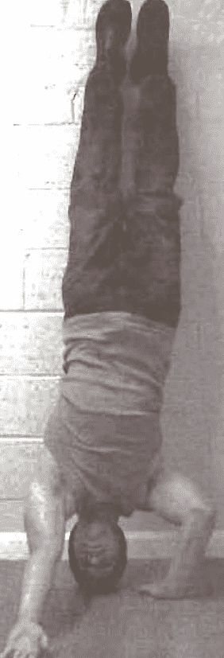

< < < Back
How To Do Handstand Push-Ups – Return Of Kings
If there is any muscle that is indelibly linked to the concept of masculinity, and serves as a cultural shorthand for “strength”…it’s probably the biceps. And that’s because people are stupid. In an ideal world, a much better candidate just might be the deltoids. For while women are quite capable of having lower body strength roughly comparable to a man (due to them typically having a lower center of gravity and having wider hips), men have the advantage in upper body strength, a difference that is noticeable when looking at a man’s shoulders, which are going to be wider than the hips (assuming the owner of said shoulders isn’t a complete tub).
Or, to put it another way, broad shoulders are an instant signifier of strength and power, so it’s in your best interests to get some.
A Brief Anatomy Lesson
The body part we call “the shoulder” actually consists of several muscles that connect to the scapula (shoulder blade), humerus (upper arm), and clavicle (collarbone)—the most prominent of these being the deltoid, which forms the main contour of the shoulder.
In addition to this, the trapezius and pectoralis minor complete the visual element that is informally called the shoulder. There are several other muscles that involve the movement of the arm, but these will not be discussed.
Most upper body compound exercises that involve any sort of a pushing motion will work the deltoids and pectoralis minor to some extent-bench presses, push presses, overhead presses, push-ups, punching the heavy bag, etc. The trapezius muscles, in contrast, are worked in pulling exercises: pull-ups, rows, deadlifts, and the like.
And of course, the subject of today’s article: the handstand push-up. It does not hit the trapezius muscles, but it is a tremendous workout for the other two muscles listed above. It also promotes blood circulation to the head and trains your dexterity and balance. It is an exercise that you ought to be doing.
The Steps
Doing a handstand, let alone a handstand pushup, seems a daunting, terrifying task. And…yes, it is for a beginner. Trying to do the technique cold will result in you slamming your sacral vertebrae, your head, or both into the ground—hard.
To begin, realize that it is perfectly okay to do the techniques with your feet on the wall. This will build up the strength and muscular power sufficiently, but if you want to do “free” handstands (i.e. off the wall), you will eventually need to train specifically for this. Bear in mind that handstand pushups can be done either free or on the wall, but of course they are much easier on the wall due to having your feet on the wall for balance
Speaking of feet, I have recently dislocated my right, so sadly I will not be showing pictures of myself. Enjoy the stock photos.

Anyway, to begin, you won’t even be doing a handstand. You will be doing a headstand: put your head on the ground, get into a “sprinter” position, then kick up, with your feet on the wall and your hands and feet bearing your weight. Train this until you can hold it for one minute, and then go to the next step
The second is another held position, the “tuck plank” or the “Crow stand”: crouch down on the ground with your hands on the floor, tip forward, and bear your weight on your hands as shown below. Hold this for a minute again.
Number three is the first true handstand you’ll be doing, and it’s again just a static position. Kick into the handstand, and hold it for time. After one minute, move on.
Then we have half handstand pushups. From the static handstand position, bend down until you’re halfway down. And then push up. Do 10 of these and move on
Then do the full handstand pushups, put your hands shoulder width, descend until your head touches the ground (CONTROL your descent, obviously), and then push back up.
Diamond handstand pushups are just like the diamond regular pushups: put your hands together into a diamond, and do a pushup. If you can’t do a diamond, then gradually bring your hands closer and closer together (i.e. from shoulder width, move your hands a couple of inches closer together, and then repeatedly do so until you are doing the diamond)
If you completed the one-armed pushup steps, then hand and a half pushups will be exactly what you think: one hand on a basketball or stack of books (the latter being easier due to its stability), the other on the floor, and do a push-up. This makes the hand on the floor work harder, as well as training the central nervous system to work unilaterally.
1/2 one handed pushups are where this series gets really hard: kick into a regular handstand, then remove one hand and put it on the wall. Then do a pushup, going halfway down. This exercise will train the joints and muscles of the shoulder doing the work, as well as the central nervous system. Do 10 with each hand.

Assisted one handed pushups consist of getting into a one-handed pushup position, with the non-working arm extended diagonally outward resting on its back on the floor. Then do the one-handed pushup-the extended arm provides a little bit of assistance, but the vast majority of labor is on the flat arm. Do 10 of these with each hand, and move onto that awe-inspiring last step…

The one handed pushup is, to be blunt, extremely difficult, even when using the wall. Get into the same position as step 8, and go all the way down. Do not expect to be able to do more than 1 of these with each hand when starting out (I still can only do one with each hand).
Moving Forward
So once you have mastered this (it will take some time), you might ask how to move on—obviously, adding weight to this exercise will be difficult and awkward. The answer is free balancing, and then doing the exercises free of the wall.
You will likely not be able to do a handstand on your first go—try a headstand free of the wall first. Once you can hold that for a minute, do the same for a crow stand.
Once that’s done, try the free handstand. And from there, try the push-ups. And if you don’t want to do free handstands, there are always more exercises to try.
Read More: Need A Push At The Gym? Try Creatine